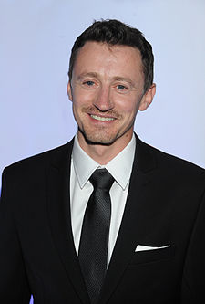
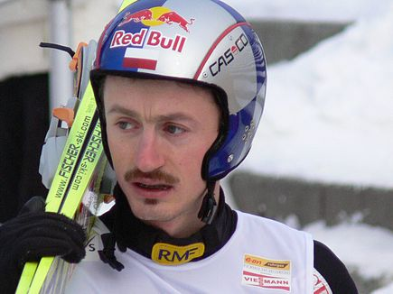

Adam Henryk Małysz
Urodził się 3 grudnia 1977 w Wiśl, polski skoczek narciarski i kierowca rajdowy, uprawiał też kombinację norweską. Od 2016 pełni funkcję dyrektora koordynatora ds. skoków narciarskich i kombinacji norweskiej w Polskim Związku Narciarskim. Czterokrotny olimpijczyk. Zdobywca czterech medali olimpijskich (srebrnego i brązowego w 2002 i dwóch srebrnych w 2010) i sześciu medali mistrzostw świata (złotego i srebrnego w 2001, dwóch złotych w 2003, złotego w 2007 i brązowego w 2011). Czterokrotny zdobywca Pucharu Świata (w sezonach 2000/2001, 2001/2002, 2002/2003 i 2006/2007), zwycięzca 39 konkursów PŚ. Triumfator 49. Turnieju Czterech Skoczni, zwycięzca trzech edycji Turnieju Nordyckiego (2001, 2003 i 2007) i Letniego Grand Prix (2001, 2004 i 2006), zwycięzca Turnieju Czterech Narodów 2010 i dwukrotny zdobywca Pucharu KOP. Zdobywca 39 indywidualnych złotych medali mistrzostw Polski (21 zimą i 18 latem). Były rekordzista Polski (230,5 m) i były współrekordzista świata w długości skoku narciarskiego (225 m). W latach 1995–2011 we wszystkich 349 startach w Pucharze Świata zdobył łącznie 13070 punktów, punktując w 307 konkursach, a 198 razy zajmując miejsce w pierwszej dziesiątce zawodów. Jako zawodnika cechowało go mocne odbicie z progu i bardzo niska pozycja w locie. W trakcie kariery skakał na nartach marki Elan (1994–1996 oraz 1999–2004), Rossignol (1996–1998) i Fischer (2004–2011). Po sezonie 2010/2011 zakończył karierę skoczka narciarskiego i rozpoczął starty w rajdach samochodowych. W 2012 zdobył tytuł międzynarodowego rajdowego mistrza Polski i Czech, a w 2013 odniósł pierwsze w karierze zwycięstwo w rajdach terenowych. W latach 2012–2016 pięciokrotnie uczestniczył w Rajdzie Dakar. Za wybitne osiągnięcia sportowe został trzykrotnie odznaczony Orderem Odrodzenia Polski przez Prezydenta RP. Czterokrotnie wybierany najlepszym sportowcem Polski w plebiscycie „Przeglądu Sportowego” (w 2001, 2002, 2003 i 2007). W 2019 wybrany najlepszym polskim narciarzem w plebiscycie „Gwiazdy 100-lecia PZN”. Przez wielu uważany za najlepszego polskiego sportowca pierwszej dekady XXI wieku. Honorowy obywatel miasta Zakopanego i patron skoczni narciarskiej w Wiśle.
Życie prywatne
Adam Małysz urodził się 3 grudnia 1977 w Wiśle jako syn Jana i Ewy z domu Szturc (pobrali się w 1974); ma starszą siostrę Iwonę (ur. 1975). Pierwszy skok oddał w wieku sześciu lat, w 1983 roku. W 1992 ukończył Szkołę Podstawową nr 4 w Wiśle Głębcach. Trzy lata później w Zasadniczej Szkole Zawodowej w Ustroniu zdobył zawód (specjalizacja: blacharz-dekarz). W 2010 roku zdał maturę i uzyskał wykształcenie średnie. W 2018 obronił pracę licencjacką na Wydziale Zarządzania Politechniki Częstochowskiej. Zna język niemiecki. 16 czerwca 1997 ożenił się z Izabelą Polok (ur. 4 grudnia 1978). Ślub odbył się w ewangelickim kościele pw. apostołów Piotra i Pawła w Wiśle (Adam jest luteraninem, Izabela – katoliczką). 31 października tego samego roku urodziła się ich córka, Karolina. 1 kwietnia 2007 otworzył galerię trofeów. Znajdują się w niej wszystkie najważniejsze medale i puchary, w tym Kryształowe Kule za triumfy w Pucharze Świata. Galeria znajduje się w budynku Fundacji Izabeli i Adama Małyszów w Wiśle. 22 czerwca 2020 poinformował, że jest zakażony SARS-CoV-2.
Przebieg kariery
Początki
Narciarskie tradycje były w rodzinie Małysza od dawna. Jego pradziadek miał własną skocznię, na której beskidzcy zawodnicy osiągali odległości w granicach pięćdziesięciu metrów. Ojciec pracował jako kierowca w Klubie Sportowym Wisła, zaś wuj – Jan Szturc, najpierw był skoczkiem, kombinatorem i piłkarzem, a po zakończeniu kariery – trenerem klubowym. Właśnie za namową ojca i wuja, w wieku sześciu lat rozpoczął treningi narciarskie. Pierwszy skok oddał mając 6 lat na obiekcie K17 w Wiśle-Centrum, a po lądowaniu na 7 metrze doszło do upadku, ponieważ buty Małysza miały zbyt duży rozmiar.
Skoki narciarskie
18 stycznia 1991 wystąpił w mistrzostwach TOZN na Maleńkiej Krokwi w Zakopanem. 28 lutego 1993, na skoczni K40 w Wiśle, został wicemistrzem Polski juniorów młodszych i młodzików w skokach (dwa dni wcześniej był 4. na obiekcie K60). 12 marca 1993, na skoczni Skalite w Szczyrku, wziął udział w aż dwóch konkursach mistrzostw Polski (MP). Najpierw wywalczył brązowy medal MP Juniorów, a następnie – w barwach KS „Wisła” Wisła – zajął 6. miejsce w konkursie drużynowym 68. seniorskich mistrzostw kraju na skoczni normalnej K85. Dwa dni później zadebiutował w konkursie indywidualnym MP seniorów (na normalnej skoczni K85), plasując się na 14. pozycji. 29 grudnia 1993 zadebiutował na arenie międzynarodowej w zmaganiach seniorskich, zajmując 48. lokatę konkursu Pucharu Kontynentalnego na Klaushoferschanze (K73) w Sankt Aegyd (sezon 1993/1994). 26 (bądź 30) stycznia 1994 zajął 46. lokatę w indywidualnym konkursie skoków podczas Mistrzostw Świata Juniorów 1994 na Raimund-Ertl-Schanze w Breitenwangu, a 27 stycznia 1994 wywalczył z polską reprezentacją 10. pozycję w konkursie drużynowym. 4 lutego 1994 na Średniej Krokwi, wraz z kolegami z KS Wisła, sięgnął po brąz w konkursie drużynowym 69. Mistrzostw Polski na skoczni normalnej. Dzień później – jeszcze jako junior – został wicemistrzem Polski seniorów na Wielkiej Krokwi, a 6 lutego 1994 – seniorskim mistrzem kraju na Średniej Krokwi. 18 września w Klingenthal odniósł podobnie jak rok wcześniej zwycięstwo w konkursie do lat trzynastu, obsadzonym głównie przez niemieckich juniorów. W grudniu w mistrzostwach makroregionu ponownie przegrał tylko z Hulą. Na Mistrzostwach TZN w konkursie na Małej Krokwi w kategorii "1984 i młodsi" zajął trzecie miejsce, a na Maleńkiej Krokwi w niższej kategorii wygrał. W styczniu odbyły się Mistrzostwa Śląska w Szczyrku. Wziął udział w czterech konkursach, a najlepszy rezultat – drugie miejsce, za Mateuszem Rutkowskim - uzyskał w konkursie na skoczni 30-metrowej dla rocznika 1986 i młodszych. W rywalizacji open na większym obiekcie był 30. W lutym w Karpaczu zajął 16. miejsce w otwartym konkursie o Puchar Burmistrza tego miasta. Wygrał też konkursy marcowych Mistrzostw SMS-ów w Zakopanem na obiektach K-65 i K-85 w kategorii "1984 i młodsi". Ponadto pięciokrotnie stawał na podium ligi szkolnej, trzykrotnie zwyciężając. W marcu stanął jeszcze na najniższym stopniu podium w Ogólnopolskich Spotkaniach UKS na Maleńkiej Krokwi (za Rutkowskim i Hulą). Wygrał też towarzyski Puchar RMF FM.

1994/1995
Jesienią 1994 – pod wpływem sugestii trenera Szturca – zdecydował się zarzucić kombinację norweską i poświęcić się tylko skokom narciarskim. W tym samym roku trafił do kadry narodowej polskich skoczków, prowadzonej wówczas przez Czecha Pavla Mikeskę. 9 grudnia na Srednjej velikance w Planicy zadebiutował w Pucharze Świata, zajmując w kwalifikacjach do konkursu głównego 55. miejsce i nie awansując do niego. Pierwszy występ Adama Małysza w zawodach Pucharu Świata miał miejsce 4 stycznia 1995 na Bergisel w Innsbrucku. Podczas tego konkursu zajął 17. miejsce, co dało mu pierwsze w karierze punkty do klasyfikacji tego cyklu. Nie startował w pozostałych konkursach Turnieju Czterech Skoczni i w jego końcowej klasyfikacji zajął 55. miejsce. W tym samym sezonie jeszcze cztery razy zajął miejsce w czołowej trzydziestce konkursu PŚ. 14 stycznia w Engelbergu zajął 27. lokatę, dzięki czemu zdobył cztery punkty do klasyfikacji. Podczas konkursu na Lugnet w Falun (4 lutego) został sklasyfikowany na 23. miejscu. Dzień później na tej samej skoczni był 28. W sezonie 1994/1995 po raz ostatni punktował 12 lutego na Holmenkollbakken w Oslo, gdzie był 20. W łącznej klasyfikacji Adam Małysz uplasował się na 51. miejscu z dorobkiem 40 punktów. 1 marca 1995 wystąpił na mistrzostwach świata juniorów w Gällivare gdzie zajął 10. miejsce[30]. Później wystartował także w seniorskim czempionacie w kanadyjskim Thunder Bay, gdzie był 10. i 11.
1995/1996
Podczas debiutu w Letniej Grand Prix Adam Małysz zajął 66. miejsce. Wziął udział w tylko jednym konkursie, w którym został sklasyfikowany na 42. pozycji, nie kwalifikując się do finałowej serii. Sezon zimowy 1995/1996 Adam Małysz rozpoczął od 12. miejsca w Lillehammer. Sześć dni później w Villach był 22. 16 grudnia na skoczni w Chamonix zajął 21. lokatę. 28 grudnia w Oberhofie uplasował się na 11. miejscu. W TCS wziął udział w trzech spośród czterech konkursów. 30 grudnia na Schattenbergschanze w Oberstdorfie zajął 18. miejsce, 1 stycznia na Große Olympiaschanze w Garmisch-Partenkirchen był 16. a 4 stycznia w Innsbrucku zajął jedenastą lokatę. Cały Turniej zakończył na 28. miejscu. 13 stycznia w Engelbergu Małysz pierwszy raz w karierze zajął miejsce w czołowej dziesiątce zawodów Pucharu Świata. Był wówczas dziewiąty. Dzień później na tej samej skoczni zajął ósmą lokatę; podobnie 20 stycznia na normalnej skoczni w Sapporo. 21 stycznia na skoczni Ōkurayama w tym mieście był 23. Podczas konkursów na zakopiańskiej Wielkiej Krokwi był dziewiąty i szósty (ex aequo z Espenem Bredesenem). 10 lutego na skoczni Kulm w Tauplitz Małysz zajął ósme miejsce, pierwszy raz w karierze punktując na skoczni mamuciej. Dzień później na tej samej skoczni był osiemnasty. Po połączeniu punktacji obu konkursów zaliczanych do mistrzostw świata w lotach Polak znalazł się na 14. pozycji. 17 lutego podczas konkursu PŚ na skoczni w Iron Mountain zajął dziewiątą lokatę. Rozbieg starej Holmenkollen, gdzie Adam Małysz odniósł pierwsze w karierze zwycięstwo w PŚ. Dzień później na tym obiekcie pierwszy raz w karierze stanął na podium zawodów Pucharu Świata. Zajął drugą lokatę, przegrywając jedynie z Masahiko Haradą, który wyprzedził Małysza o 37,2 pkt. Było to pierwsze pucharowe podium reprezentanta Polski od 1987 roku. 28 lutego na normalnej skoczni w Kuopio zajął 13. lokatę. W Lahti natomiast po raz drugi w karierze stanął na podium zawodów Pucharu Świata. Tym razem był trzeci, przegrywając tylko z Haradą i Miką Antero Laitinenem. Dwa dni później na mniejszej skoczni był czwarty. Nie pojechał na konkursy lotów do Harrachova, lecz wybrał się do Falun, gdzie na Lugnet wygrał konkurs Pucharu Kontynentalnego. Tydzień później na tej skoczni zajął drugą lokatę w PŚ, tuż za Primožem Peterką. 17 marca 1996 w Oslo, w ostatnim konkursie Pucharu Świata w tamtym sezonie, Adam Małysz zwyciężył pierwszy raz w swojej karierze. Tego samego dnia karierę zakończył Niemiec Jens Weißflog, wieloletni idol Małysza. W związku z tym, przez wielu komentatorów i kibiców konkurs ten nazywany był „zmianą warty”. Było to pierwsze pucharowe zwycięstwo reprezentanta Polski od 1986 roku. W końcowej klasyfikacji PŚ w tym sezonie Małysz zajął siódme miejsce.
1996/1997
W Letniej Grand Prix Adam Małysz został sklasyfikowany na szóstym miejscu. Nie skakał w pierwszym z konkursów, 18 sierpnia w Trondheim. Trzy dni później na Hans-Renner-Schanze w Oberhofie stanął na najniższym stopniu podium, tuż za Miką Laitinenem i Ari-Pekka Nikkolą. 25 sierpnia na Adlerschanze w Hinterzarten Małysz ponownie był trzeci, ponownie za Nikkolą i Laitinenem. 28 sierpnia na skoczni w Predazzo uplasował się na 18. lokacie. 1 września podczas ostatniego konkursu LGP w Stams Małysz zajął ostatnie, 49. miejsce po skoku na 62 metry. Jesienią skakał także w PK w Hakubie (był tam na 4. i 2. miejscu). W sezonie zimowym 1996/1997 Małysz pierwszy raz punktował 30 listopada na skoczni w Lillehammer. Zajął tam 28. miejsce. Podczas konkursu na Ruce w Kuusamo 7 grudnia był 19. Dzień później na tej samej skoczni uplasował się na trzynastym miejscu. 15 grudnia w Harrachovie zajął czwarte miejsce, tuż za Primožem Peterką, Andreasem Goldbergerem i Kristianem Brendenem. Podczas Turnieju Czterech Skoczni 1996/1997 Adam Małysz startował we wszystkich czterech konkursach. Podczas inauguracyjnego konkursu w Oberstdorfie zajął 22. miejsce. W noworocznym konkursie w Ga-Pa był 12. 4 stycznia na Bergisel pierwszy raz zajął miejsce w czołowej dziesiątce konkursu Turnieju Czterech Skoczni – był szósty. Dwa dni później na Paul-Ausserleitner-Schanze w Bischofshofen pierwszy raz stanął na podium w konkursie TCS, przegrywając jedynie z Dieterem Thomą. Cały Turniej zakończył na ósmej pozycji. 11 stycznia w Engelbergu skoczek z Wisły stanął na najniższym stopniu podium. Dzień później na tej samej skoczni był 17. 18 stycznia na normalnej skoczni w Sapporo drugi raz w karierze zwyciężył w zawodach Pucharu Świata. Dzień później na dużej skoczni w tym mieście był 24. 26 stycznia w Hakubie ponownie odniósł zwycięstwo. Podczas następnych dwóch konkursów na Kulm w Tauplitz (8 i 9 lutego) był 47. i 26. Na mistrzostwach świata w Trondheim zajął 14. miejsce na normalnej i 36. na dużej skoczni. Był też 10. w konkursie drużynowym. Po powrocie do zawodów PŚ w konkursie na skoczni w Lahti zajął szesnastą lokatę. Na Puijo w Kuopio był czternasty, a na skoczni Lugnet w Falun zajął piątą pozycję, przegrywając tylko z Primožem Peterką, Dieterem Thomą, Hiroya Saitō i Håvardem Lie. Trzy dni później na Holmenkollbakken w Oslo Małysz był dziewiętnasty. Turniej Skandynawski ukończył na piątym miejscu. W konkursach w Planicy Małysz już nie wystąpił. W końcowej klasyfikacji Pucharu Świata zgromadził łącznie 612 punktów, co dało mu dziesiąte miejsce.
1997/1998
W 1997 roku Adam Małysz zajął 21. miejsce w Letniej Grand Prix w skokach narciarskich na igelicie. Wyprzedził wówczas o jedno miejsce Wojciecha Skupnia. Podczas pierwszego z konkursów, 14 sierpnia na skoczni w Courchevel Małysz był 23. Trzy dni później na skoczni w Trondheim nie wystartował. 24 sierpnia podczas konkursu w Hinterzarten zajął najwyższe w cyklu GP miejsce ósme. 27 sierpnia w Predazzo został sklasyfikowany na 23. pozycji. Podczas konkursu na skoczni Stams (31 sierpnia) zajął 18. lokatę. Łącznie Małysz zdobył 61 punktów, 7 punktów mniej od wyprzedzającego go bezpośrednio Kenta Johanssena. Stanął także na podium po konkursie PK w Velenje, w którym znalazł się na drugim miejscu. Sezon 1997/1998 to najgorszy okres w karierze Adama Małysza. Tylko kilka razy zdobywał on punkty Pucharu Świata. Sezon Pucharu Świata zaczął od startów w Lillehammer gdzie zajął w obu konkursach odległe miejsca (odpowiednio 44. i 42.). Pierwsze punkty w Pucharze Świata zdobył 6 grudnia na skoczni w Predazzo, gdzie był 21. Dwa dni później w Villach zajął 31. miejsce, nie zdobywając ani jednego punktu do klasyfikacji. 12 grudnia w Harrachovie zdobył dziesięć punktów do Pucharu Świata, zajmując 21. miejsce w konkursie. Podczas konkursów na skoczni w Engelbergu (20 i 21 grudnia) dwa razy uplasował się na 28. miejscu. W Turnieju Czterech Skoczni Małysz tylko raz zakwalifikował się do finałowej serii zawodów. W pierwszym konkursie, w Oberstdorfie zajął 41. miejsce. 1 stycznia w konkursie na Große Olympiaschanze zajął najwyższe w całym Turnieju, 24. miejsce. Trzy dni później w Innsbrucku był 46. wyprzedzając tylko Roara Ljøkelsøya, Takanobu Okabe, Jussiego Hautamäkiego i Simona Ammanna. W Bischofshofen, w ostatnim z konkursów, zajął 33. miejsce. W całym Turnieju ostatecznie uplasował się na 30. miejscu. Potem jeszcze tylko dwa razy zdobywał pucharowe punkty. 17 stycznia na Wielkiej Krokwi w Zakopanem był 23., a dzień później na tej samej skoczni 29. Porażką zakończył się występ na olimpiadzie w Hakubie/Nagano – 51. miejsce na skoczni K-90 oraz 52. na K-120. W konkursie drużynowym zajął 8. miejsce.
1998/1999
W trakcie sezonu 1998/1999 Adam Małysz wciąż poważnie myślał o zakończeniu kariery sportowej i podjęciu pracy w wyuczonym zawodzie dekarza. W pierwszej części sezonu 1998/1999 Adam Małysz nie wystąpił ani razu. Pierwszy start w sezonie miał miejsce dopiero podczas Turnieju Czterech Skoczni. W nim Małysz ani razu nie awansował do drugiej serii. 30 grudnia w Oberstdorfie był najbliżej awansu, na 34. miejscu. Poza tym, w konkursach w Innsbrucku (3 stycznia) i Bischofshofen (6 stycznia) zajął 40. pozycję. Do konkursu na skoczni w Garmisch-Partenkirchen (1 stycznia 1999) nie zakwalifikował się. Turniej zakończył ostatecznie na 43. pozycji. 16 stycznia na Wielkiej Krokwi w Zakopanem uplasował się na 27. miejscu. Dzień później na tej samej skoczni był 23. Na Ōkurayamie w Sapporo był 19. i 31. 29 stycznia w Willingen Małysz zdobył pięć punktów do klasyfikacji Pucharu Świata po zajęciu 26. miejsca w pierwszym z konkursów. W drugim był 40. i nie zdobył punktów do klasyfikacji. Na mistrzostwach świata w Ramsau był 37. na skoczni dużej i 27. na normalnej. 6 marca na normalnej skoczni w Lahti zajął najwyższe w sezonie, 17. miejsce. Trzy dni później w Trondheim zajął miejsce poza czołową trzydziestką, trzydzieste ósme. 11 marca na Lugnet w Falun uplasował się na 24. pozycji. 14 marca na skoczni Holmenkollbakken w Oslo zajął 27. lokatę. W klasyfikacji końcowej Turnieju Nordyckiego był szesnasty. Podczas ostatniego weekendu sezonu w Planicy Adam Małysz zajmował kolejno: 35., 28. i 30. pozycję. Sezon zakończył na 46. miejscu z ilością 58 punktów.
1999/2000
W 1999 roku Małysz w generalnej klasyfikacji LGP zajął 54. miejsce. Jedynie 11 września w Hakubie zakwalifikował się do drugiej serii konkursu, gdzie zajął 29. miejsce. W Hinterzarten i Sapporo uplasował się kolejno na 46. i 43. miejscu. W konkursach w Courchevel i Stams nie skakał. Stanął za to na drugim stopniu podium na Średniej Krokwi podczas konkursu Pucharu Kontynentalnego, przegrywając jedynie z Dirkiem Elsem. Sezon 1999/2000 był przełomem w karierze Adama Małysza. Nowe metody szkoleniowe oraz współpraca z psychologiem Janem Blecharzem i fizjologiem Jerzym Żołądziem przyniosły na tyle dobre efekty, że zaczął uzyskiwać punktowane miejsca w zawodach. Był 19 razy w czołowej trzydziestce zawodów Pucharu Świata i zajął 28. miejsce w generalnej klasyfikacji. Podczas inauguracji sezonu 99/00 Pucharu Świata, 28 listopada w Kuopio Adam Małysz zajął 38. miejsce i nie zdobył punktów do klasyfikacji. 4 grudnia w Predazzo zakwalifikował się do drugiej serii zawodów, zajmując 26. pozycję. Dzień później na tej samej skoczni był 23. 12 grudnia na średniej skoczni w Villach był 28. 18 grudnia na Wielkiej Krokwi w Zakopanem zajął trzynastą lokatę. Na drugi dzień był 38. W Turnieju Czterech Skoczni zajął 31. miejsce. Nie startował w pierwszym z konkursów, w Oberstdorfie, gdyż nie przeszedł kwalifikacji. stycznia 2000 na skoczni w Garmisch-Partenkirchen był 17. Dwa dni później w Innsbrucku zajął 26. pozycję, a 6 stycznia w Bischofshofen – 46. Po zakończeniu turnieju Małysz nie zdobywał punktów Pucharu Świata aż do 26 stycznia, kiedy to zajął 25. lokatę na skoczni w Hakubie. Podczas weekendu na skoczni w Willingen (5-6 lutego) Adam Małysz był kolejno 24. i 25. Najwyższe w sezonie miejsce zajął 26 lutego na skoczni w Iron Mountain, gdzie był czwarty, przegrywając jedynie z Martinem Schmittem, Tommym Ingebrigtsenem i Stefanem Horngacherem. Dzień później na tej samej skoczni był 22. Podobnie 4 marca na dużej skoczni w Lahti. Następnego dnia na tej samej skoczni uplasował się na 27. miejscu. 10 marca w konkursie na skoczni w Trondheim został sklasyfikowany na 21. pozycji. Dwa dni później na skoczni Holmenkollbakken w Oslo uplasował się na dwunastym miejscu. Turniej Nordycki ukończył na 20. miejscu. Podczas ostatniego w sezonie konkursu, 19 marca na Velikance w Planicy zajął siódme miejsce. Przegrał wówczas ze Svenem Hannawaldem, Janne Ahonenem, Andreasem Goldbergerem, Tommym Ingebrigtsenem, Noriakim Kasaim i Kazuyoshim Funakim. Pobił wtedy swój rekord życiowy; od tamtej pory wynosił on 191,5 metra. Adam Małysz ostatecznie został sklasyfikowany w PŚ na 28. miejscu, zdobywając razem 214 punktów. W MŚ w lotach w Vikersund znalazł się na 16. miejscu.
2000/2001
W Letniej Grand Prix 2000 „Orzeł z Wisły” zajął 19. miejsce w klasyfikacji generalnej, uzyskując 93 punkty. W pięciu konkursach znalazł się w finale. 12 sierpnia w Villach uplasował się na czwartej pozycji. W Hakubie (K-120) skoczył 101,5 i 94,5 metra, zajmując 24. miejsce. Pięć dni później na tej samej skoczni poszybował na odległość 114 metrów i zajął 20. lokatę. W Sapporo był dwunasty, skacząc 113,5 i 117,5 metra. Wygrał ponadto konkurs PK w Oberstdorfie. Sezon 2000/2001 rozpoczął się 23 listopada kwalifikacjami do konkursu na skoczni Puijo w Kuopio. Wygrał je Małysz, lecz został zdyskwalifikowany za zbyt długie narty, przez co w inauguracyjnym konkursie sezonu nie wystąpił. Wynik ten był jednak zapowiedzią sukcesów, jakie już wkrótce miały czekać Polaka. Zanim jednak do nich doszło, odbyły się dwa kolejne konkursy w Kuopio, oba w bardzo niestabilnych warunkach atmosferycznych. W pierwszym z nich, jednoseryjnym, w dniu 2 grudnia Małysz zajął najniższe w sezonie, 26. miejsce. Podczas drugiego z konkursów na tej skoczni, 3 grudnia był jedenasty, notując znaczny awans po drugim skoku. Później z powodu zbyt wysokich jak na grudzień temperatur i braku śniegu, odwołano pięć konkursów Pucharu Świata i skoczkowie do rywalizacji powrócili dopiero na Turniej Czterech Skoczni. Skocznia w Bischofshofen, miejsce triumfu Małysza w 2001. Adam Małysz wygrał Turniej Czterech Skoczni jako pierwszy reprezentant Polski w historii. 29 grudnia 2000 roku na skoczni w Oberstdorfie zajął czwarte miejsce. W noworocznym konkursie w Garmisch był trzeci, przegrywając tylko z Kasaim i Dmitrijem Wasiljewem. W konkursie tym ustanowił też rekord skoczni Große Olympiaschanze (129,5 metra), który nie został pobity aż do jej zburzenia i zbudowania nowej w 2007. Pozostałe dwa konkursy (4 stycznia w Innsbrucku i 6 stycznia w Bischofshofen) Małysz wygrał, w obu uzyskując kilkadziesiąt punktów przewagi nad drugim zawodnikiem. W Innsbrucku wyprzedził Janne Ahonena o 44,9 punktów, a w Bischofshofen wyprzedził go o 31,9 punktów. Zwyciężył w całym turnieju z przewagą ponad 100 punktów nad drugim zawodnikiem, czyniąc to jako pierwszy i dotąd jedyny skoczek w historii. Zebrał także jako pierwszy skoczek w historii ponad 1000 pkt. w czterech konkursach. Adam Małysz podczas TCS 2000/2001 wygrał też kwalifikacje do każdego z czterech konkursów, dzięki czemu w każdym z nich startował z numerem 1. W tydzień po zakończeniu turnieju skoczkowie pojechali do czeskiego Harrachova, gdzie w dniach 13–14 stycznia odbyły się dwa konkursy na skoczni mamuciej. W obydwu Polak zwyciężył. Tamtego weekendu kilkakrotnie bił rekordy Polski w długości skoku narciarskiego. Ostatecznie, po zakończeniu zawodów rekord ten wynosił 212 metrów. 20 stycznia w Park City ponownie odniósł zwycięstwo i został liderem klasyfikacji PŚ. 24 stycznia w Hakubie stracił koszulkę lidera na rzecz Martina Schmitta. W zawodach zajął wówczas ósme miejsce po upadku na zeskoku. Zdaniem Małysza, powodem upadku było sztuczne oświetlenie, przy którym Małysz nie czuł się komfortowo. Żółtą koszulkę odzyskał już podczas następnych zawodów Pucharu Świata – 27 stycznia w Sapporo, gdzie odniósł triumf po raz szósty w sezonie. Dzień później na tej samej skoczni odniósł siódme zwycięstwo. 3 lutego w konkursie na skoczni w Willingen Małysz po pierwszej serii zajmował ósme miejsce. W drugiej turze skoczył jednak 151,5 metra (na skoczni K120) i dzięki temu awansował na drugą pozycję, przegrywając jedynie z Ville Kantee. Wynik uzyskany w drugiej kolejce przez Adama Małysza (151,5 m) był wówczas nieoficjalnym rekordem świata na dużej skoczni (został poprawiony o pół metra cztery lata później przez Janne Ahonena). Następnego dnia na tej samej skoczni po raz kolejny w sezonie triumfował, osiągając 36,5 punktów przewagi nad drugim skoczkiem w zawodach, Risto Jussilainenem oraz otrzymując za dwa 142,5-metrowe skoki notę 316 pkt., najwyższą jaką do tamtej chwili przyznano na skoczniach mniejszych niż mamucie. W lutym podczas mistrzostw świata w Lahti Adam Małysz zdobył srebrny medal na dużej skoczni i złoty na normalnej – zamieniając się miejscami z Martinem Schmittem. Były to pierwsze medale mistrzostw świata w narciarstwie klasycznym reprezentantów Polski od 1978 r., kiedy Józef Łuszczek zdobył złoto w biegu na 15 km i brąz na 30 km. Później po powrocie z Finlandii Małysz z powodu choroby nie wystartował w mistrzostwach Polski. 3 marca podczas konkursu lotów na skoczni w Oberstdorfie Małysz zajął czwarte miejsce. Oddał jednak najdłuższy skok drugiej serii, na 197,5 metra. Z trzecim skoczkiem zawodów, Mattim Hautamäkim przegrał o 0,1 punktu. Dzień później na tej samej skoczni zajął drugą lokatę, przegrywając tylko z Martinem Schmittem o 0,4 punktu. Adam Małysz dwukrotnie skoczył na odległość 201,5 metra, a Schmitt osiągnął 200 i 202,5 metra. W roku 2001 Adam Małysz jako pierwszy skoczek w historii wygrał wszystkie konkursy Turnieju Nordyckiego. 7 marca na skoczni Lugnet w Falun zdobył 259,8 pkt i wyprzedził drugiego Martina Schmitta o 4,6 pkt. Dwa dni później na skoczni w Trondheim wygrał z notą 254,6 pkt, o 1,1 pkt wyprzedzając Andreasa Goldbergera i bijąc rekord obiektu (138,5 m). Podczas ostatniego z konkursów, 11 marca na skoczni Holmenkollbakken w Oslo zwyciężył z przewagą 13,6 pkt nad Stefanem Horngacherem. W ostatnich zawodach sezonu, 18 marca w Planicy był czwarty, i mimo zwycięstwa Martina Schmitta, triumfował w ogólnej klasyfikacji PŚ. Podczas konkursu w Słowenii pobił własny rekord Polski, skacząc 218,5 metra. W całym sezonie 2000/2001 odniósł jedenaście zwycięstw w zawodach Pucharu Świata, wyrównując tym samym rekord Martina Schmitta z sezonu 1998/1999. Jest pierwszym skoczkiem, który wygrał więcej niż połowę konkursów rozgrywanych w danym sezonie (11 z 21, a z mistrzostwami świata 12 z 23; kolejnym skoczkiem, który tego dokonał był Peter Prevc – bijąc rekord 15 zwycięstw w sezonie 2015/2016 dokonał tego w 29 konkursach). Jako pierwszy Polak w historii zdobył Puchar Świata w skokach narciarskich, a zarazem w ogóle pierwszy w dyscyplinie zimowej pod egidą FIS. Sukces ten powtórzył w sezonach 2001/2002, 2002/2003 i 2006/07. Jest pierwszym i jedynym do tej pory skoczkiem w historii, który wygrał kryształową kulę Pucharu Świata trzy razy z rzędu, a drugim (po Mattim Nykänenie), który zdobył ją w sumie czterokrotnie.